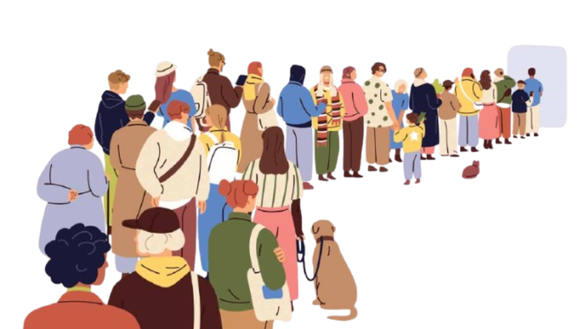

Point Hope, Alaska (Tikiġagq)
Displacement is not simply about movement, but about the transformation of identity, belonging, and lived experience.
150 million people could be displaced by climate change by 2050.
What is happening in places like Alaska today may extend to major coastal cities in the future.